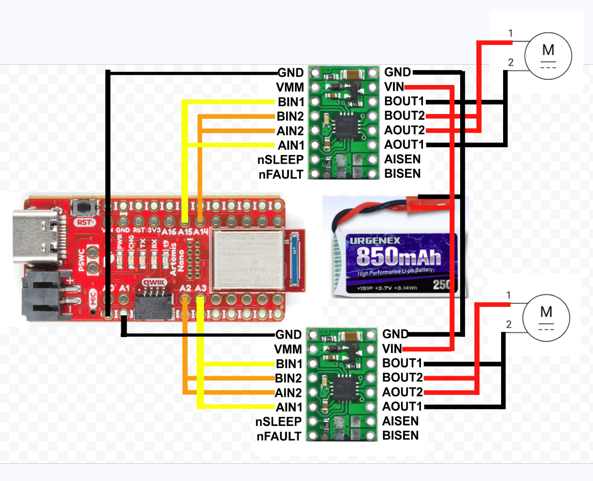
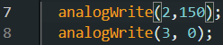
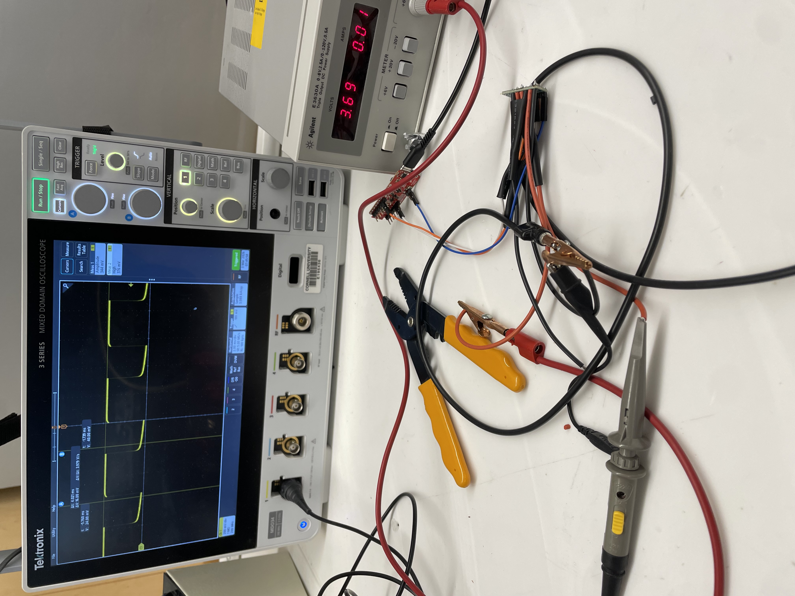
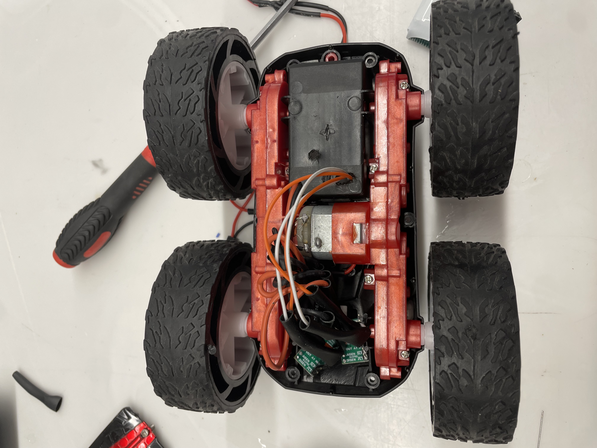
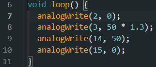
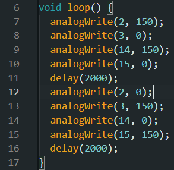

In the prelab I first read the documentation and datasheet for the dual motor driver. I then sketched out the design of my circuit.

Since I need analog pins, I am using two for each motor driver. One side of motors will be controlled by pins A2 and A3. The other side of motors will be controlled by pins A14 and A15.
Powering the Artemis and motor drivers from separate batteries means that sudden changes in voltage from the motors drawing a lot of power won't affect the Artemis itself. This prevents the Artemis from turning off if the battery drops too low in voltage where it can no longer properly power the Artemis anymore.
In terms of wiring, I will use stranded wires and plan to use jumper cables and header pins wherever possible so that I can easily add things to my robot. This means that more space will be used inside the robot's body, but I plan on cutting things off the frame to make everything fit properly. I also plan on routing the PWM signal wires that go to the motor drivers farther from the power wires and motors.
While testing my motor driver wiring, I hooked up my driver to an external power supply, and I powered it with 3.7 volts which is the same as the 850mah battery's voltage.
Using the analogWrite commands below, I ran the motor at about a 60% duty cycle by using 150/255 for the PWM number.

Hooking it up to an oscilloscope, you can see how the motor is on for about 60% of the time. Using PWM, a 60% duty cycle means the motor is on for 60% of the time which basically emulates the motor spinning at 60% of it's max power.

Below is how I wired and stuffed everything down. I taped the orange and white PWM signal wires to the left side of the robot.

I ran one motor back and forth fully on batteries in the video below.
I then ran both motors back and forth fully on batteris in the video below.
For the lower PWM value, I tested the motor driving on the ground going backwards and forwards. I found that 50/255 could drive the robot forwards and backwards, but I noticed the right motor had trouble moving and would get stuck whereas the left wheels spun up quickly. Turning in circles needed a PWM value of 150/255 which barely got the robot to spin around.
As seen in the video, the uncalibrated robot veered to the left when driving forward at a PWM value of 50/255.
To adjust for the veering, I multiplied the left wheels to spin at 1.3 times the speed of the right wheels. Below is how I calibrated it in code.

Below is a video of my robot with calibrated motors. In the middle of the run, my robot slipped on something which caused it to make a sharp angle, but kept driving in a relatively straight line after that.
The image below is my code for open loop control

The video below shows the robot driving around in open loop control.